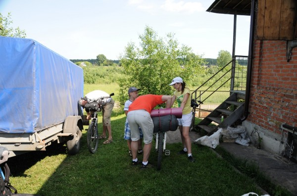
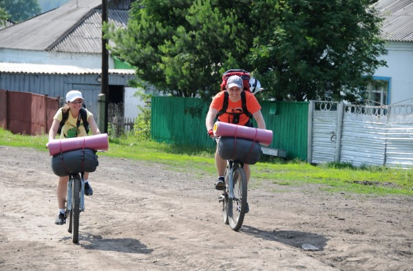

Как правило несколько раз за лето мы с друзьями оставляем городскую суету с её пробками, бизнес-ланчами, кондиционерами и фьючерсами комфортом и едем куда-нибудь где комфорта поменьше. Это могут быть и озера Хакассии или Алтая, а может быть и просто берег Томи в Старочервово.
Идея
Но на машине и дурак с автокредитом может. Забил багажник всем что надо и «а вдруг пригодиться» и езжай себе. А вот каково без неё?
Ногами далеко не уёдешь, а на велосипеде уедешь дальше, поэтому в этом году однозначно решили устроить небольшой велопробег, обременённый ночёвкой и вытекающей из неё необходимости везти, к примеру палатку.
Поначалу была идея доехать от Сарапок (где у друзей дача) по берегу реки до Зеленогорска. Правда в таком случае нам пришлось бы потратить много времени на возвращение обратно в Сарапки. Поэтому решили просто поехать «до куда доедем» переночевать и вернуться.
В составе нашей небольшой команды были четверо в разной степени взрослых человека и один не очень (мой сын девяти лет).
Субботнее утро было посвящено подготовке к пробегу.
Техподготовка
В магазине Триал-Спорт был куплен вместительный 60-литровый рюкзак. Зачеркнутая цена 7000 рублей. Куплен за 3800 - 20% скидка на туристическое оборудование владельцам дисконтных карт. Была идея купить специальный велосипедный багажник и навешивающимися сумками по бокам. Багажник есть в «Спортугалии». Цена ~1800 руб. + сумки ~2500 руб. Рюкзак показался всё-таки более универсальным.
В Спортмастере — 2 камеры 26" и 2 камеры 24", устройство для рассоединения звеньев цепи.
В магазине «Буревестник» котелок на три литра, резинки с крючками для крепления груза и «пенки» (такие коврики, которые кладуться на землю и на которых можно есть-лежать-спать).
Кроме этого у нас уже были чайник, спальные мешки, теплая одежда, купальные принадлежности, палатка, газовая плитка, топор
К обеду рюкзаки были укомплектованы и, загрузив велосипеды в автомобильный прицеп мы заехали в «Палату», купили поесть и выпить и выдвинулись в Сарапки.
Что брали поесть?
Каждый килограмм при путешествии не на машине на счету (справедливость этого утверждения окончательно придёт чуть позже), поэтому разнообразного меню решено было не составлять. Взяли 4 банки рыбных консервов, 7 пачек Доширака, крекеры, сгущенку, чай, карамель, пару пакетов с супом 7,5 литров воды.
Вода вообще самый тяжёлый и в то же время самый дефицитный в таких поездках продукт.
В путь
По приезду в Сарапки выгрузили велосипеды из прицепа, навесили на них и на себя всё, что можно и нельзя и выдвинулись по лесной дороге в сторону деревни Березовка.


…продолжение, фотки, видео, трек путешествия завтра.